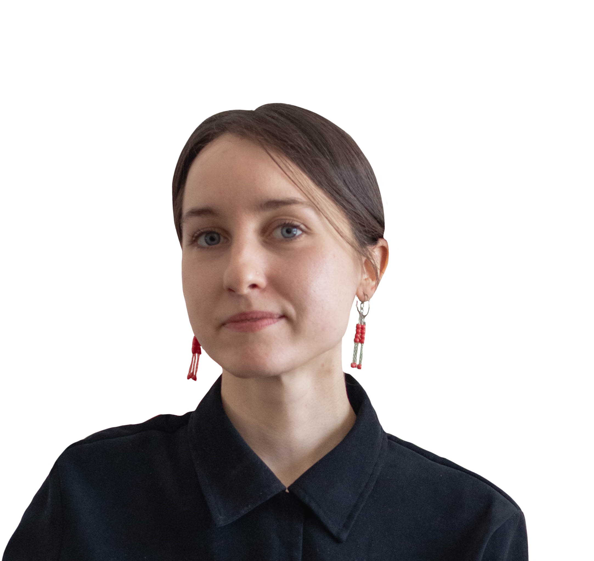

Welcome! My name is Ivanka and I am an artist and art therapy student from Ottawa, Canada. This space is where I share art projects, insights, updates, and resources on Patreon, and snapshots of my work and ideas on Instagram. As I work toward my art therapy qualifications, this space will adapt into a private practice where I will be accepting bookings as an art therapist and registered psychotherapist. Stay tuned in 2027!
꩜Art therapy integrates the creative process (drawing, painting, sculpting, etc.) with psychotherapy and/or other supportive, relational practices to facilitate healing, growth, and holistic well-being.
꩜Art therapy can facilitate self-expression, emotional and embodied awareness, connections with and development of strengths and skills, as well as cultivation of mutual support and community-building in group settings.
꩜Art therapy offers alternative ways to communicate and express feelings and experiences that words cannot adequately describe.